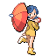

Schulkind
Julius
PokéCom-Rückkampf: 4 weitere Teams, je nach Fortschritt Lv. 54–90. Zu den Rückkämpfen
Johto · Besonderer Ort
Level und Chancen sind die Werte, die das Spiel hier verwendet. Tagsüber heißt 6 bis 19 Uhr, nachts 19 bis 6 Uhr.
Diese Pokémon laufen sichtbar herum. Sie zeigen, was hier lebt – kämpfen kannst du nur über die Tabellen oben.
4 Trainer kämpfen hier gegen dich. Level und Pokémon sind die, die sie im Kampf wirklich einsetzen. Wer dich später über den PokéCom zum Rückkampf fordert, ist vermerkt.
Schulkind
PokéCom-Rückkampf: 4 weitere Teams, je nach Fortschritt Lv. 54–90. Zu den Rückkämpfen

Göre

Pokéfan

Schirmdame
PokéCom-Rückkampf: 4 weitere Teams, je nach Fortschritt Lv. 54–90. Zu den Rückkämpfen
Itembälle und versteckte Items an diesem Ort.
Diese Items bekommst du hier geschenkt oder als Belohnung.